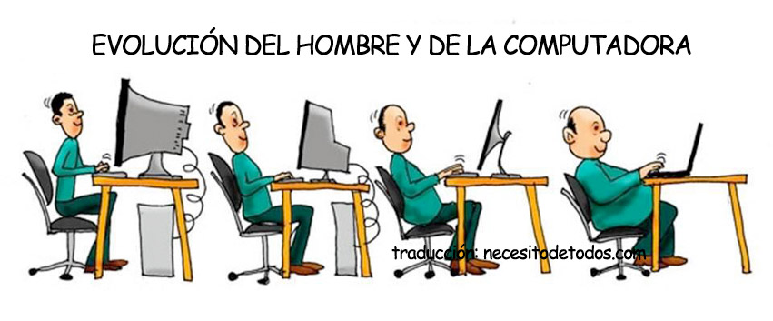

Tema N° 2: Conexión y Precaución: Explorando la Importancia y los Peligros de las Computadoras
Observa con atención la siguiente imagen:
¿Qué crees que quiera decir el meme? ¿Cómo eran las computadoras hace unos años, cómo son ahora? ¿Cuál crees que sea el efecto negativo de usar la computadora?
Desde sus inicios, las computadoras han sido protagonistas de una notable evolución que ha marcado un hito en la historia de la humanidad. De gigantes y complejas máquinas a dispositivos ligeros y portátiles, su transformación ha sido espectacular, alterando profundamente la forma en que vivimos, trabajamos y nos relacionamos. Sin embargo, junto con sus beneficios, surge la imperiosa necesidad de comprender tanto su importancia como los riesgos asociados con su uso inadecuado.
Actividad # 3: Investigar y responder en la carpeta:
- Importancia de las computadoras en la actualidad.
- Mencionar algunos problemas de salud a los que estamos expuestos con el uso prolongado de las computadoras.
- Indicar algunas recomendaciones para evitar los problemas mencionados anteriormente.
- Explicar la postura correcta al sentarse frente al computador.